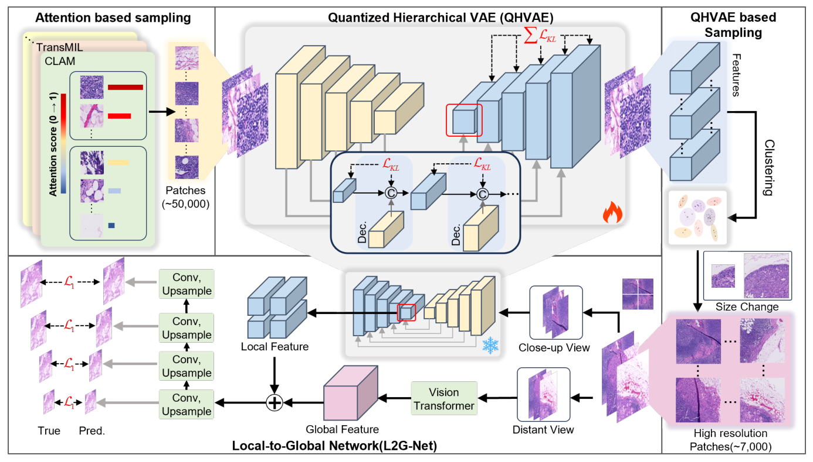

PRCV
Gigapixel WSIs contain sparse diagnostic regions, so dense high-resolution sampling is computationally prohibitive. Low-resolution patches and frozen pretrained encoders, however, lose morphology that downstream MIL needs. CDSR shows that a compact set of informative high-resolution regions is enough to reconstruct a slide-level representation.

Fig. 2 outlines the cascaded dual-scale design. A two-stage sampler first selects a small number of diverse, informative high-resolution patches from each slide. A Local-to-Global Network then encodes fine-grained morphology together with a broader tissue context and reconstructs a spatially coherent WSI representation. The resulting features are compatible with standard MIL aggregators, so slide-level prediction no longer requires a large number of training patches per slide.